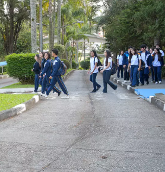
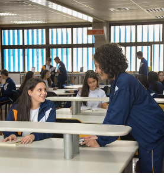
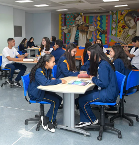

ENSINO MÉDIO
Atendendo ao disposto na Lei de Diretrizes e Bases da Educação Nacional e aos princípios que regem as políticas para as unidades Educacionais da Fundação Tereza Delta, o Ensino Médio é considerado uma etapa básica do processo educacional por assegurar aos jovens, de forma articulada, o acesso à cidadania plena. No Ensino Médio do Colégio Tereza Delta prioriza-se a formação ética e o desenvolvimento da autonomia intelectual e do pensamento crítico dos jovens, por meio da aquisição de competências e habilidades, que lhes permitam buscar e gerar informações utilizando-as adequadamente de acordo com as necessidades impostas, sendo, portanto, gestores do próprio conhecimento. O Setor de Orientação Educacional tem como principal objetivo acompanhar o desenvolvimento dos educandos e orientá-los nos diversos aspectos relacionados à aprendizagem: profissional, comportamental, cognitivo, social e familiar. Este acompanhamento deve auxiliar o docente na construção de um caminho reflexivo e promover seu aprendizado por intermédio da interação com o meio. O orientador educacional não é apenas um aplicador de sanções e punições. Ele deve colaborar também com a disciplina da escola, analisando, junto à equipe pedagógica e disciplinar, os problemas que aparecem, sugerindo soluções cabíveis e de caráter preventivo, para que o processo educacional e formativo ocorra da melhor maneira possível. Matutino – das 7h às 13h05, de segunda a sexta-feira. Sábados, das 7h45 às 11h20 – aulas de reforço e recuperação. Vespertino – das 13h15 às 19h20, de segunda a sexta-feira. Sábados, das 7h45 às 11h20 – aulas de reforço e recuperação.



